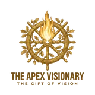
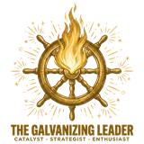
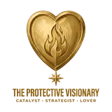
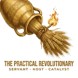
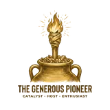

Archetypes Featuring The Catalyst
The Catalyst appears in 15 of the 35 archetypes of the soul. When it joins two other dominant gifts, it takes on a distinct expression.

The Apex Visionary
To architect world-changing movements built on unimpeachable truth and brilliant strategy.
Read the archetype → 2The Principled Reformer
To ground revolutionary ideas in meticulous research and diligent, hands-on work.
Read the archetype → 3The Scholarly Investor
To validate transformative ideas with rigorous analysis and then strategically fund their implementation.
Read the archetype → 4The Insightful Inspirer
To translate complex truths into compelling, hopeful narratives that rally people to a cause.
Read the archetype → 5The Compassionate Sage
To deliver challenging truths with profound wisdom and deep empathy for the human heart.
Read the archetype → 6The Visionary Implementer
To translate a grand, disruptive vision into a practical, step-by-step plan executed with excellence.
Read the archetype → 7The Resourced Revolutionary
To architect and fund large-scale, transformative movements and institutions.
Read the archetype → 8
The Galvanizing Leader
To fuse a bold, strategic vision with an infectious passion that mobilizes and inspires teams.
Read the archetype → 9
The Protective Visionary
To lead with decisive, transformative vision while fiercely protecting the well-being of the people involved.
Read the archetype → 14
The Practical Revolutionary
To fuel radical change not with words, but with tireless work and the generous provision of practical resources.
Read the archetype → 19The Compassionate Agitator
To challenge injustice and speak hard truths, fueled by a deep love for people and a desire to rally them to a better way.
Read the archetype → 24The Practical Pioneer
To inspire people to join a transformative cause through joyful, hands-on work and infectious optimism.
Read the archetype → 25The Compassionate Builder
To see what is broken, feel the pain it causes, and be compelled to physically build a tangible solution.
Read the archetype → 26
The Generous Pioneer
To fund and celebrate revolutionary new ventures, inspiring others to invest in a bold vision of the future.
Read the archetype → 27The Resourced Healer
To identify the root cause of suffering and then build and fund the institutions necessary for its healing.
Read the archetype →